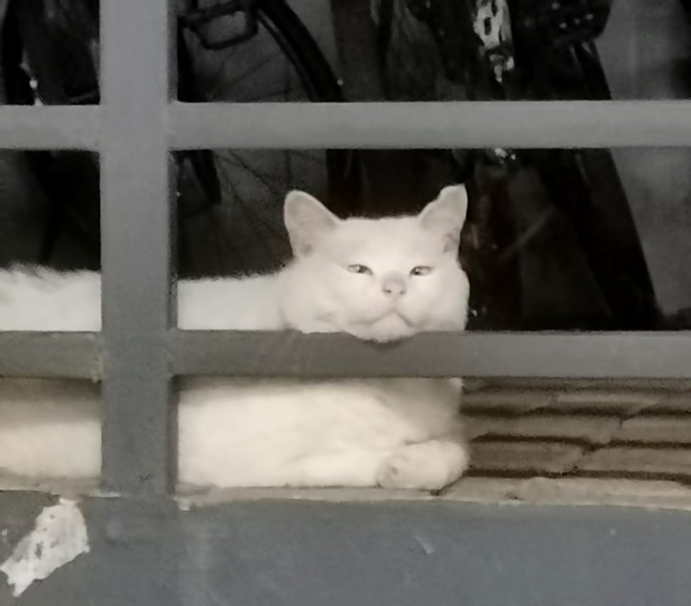
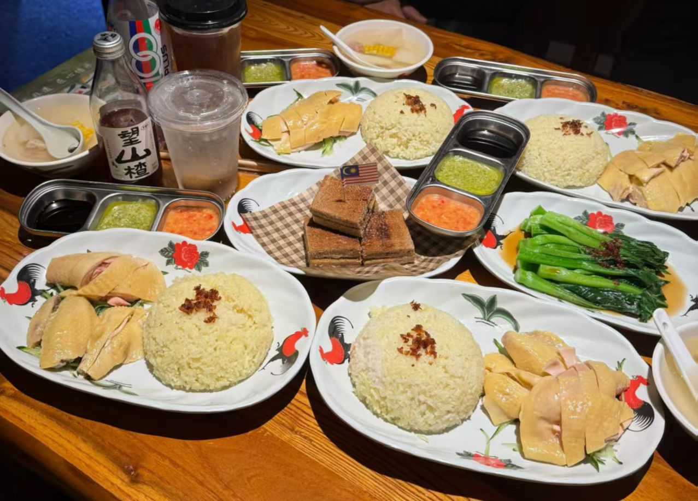
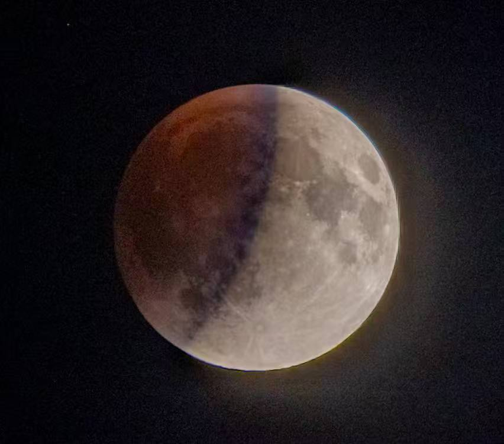
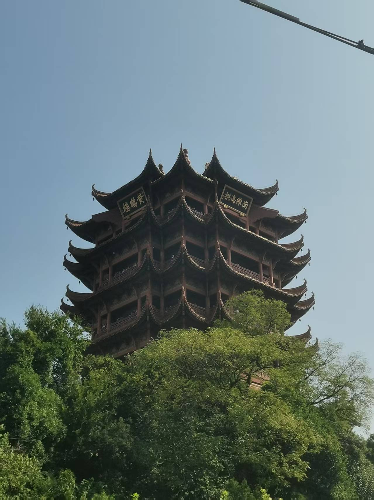
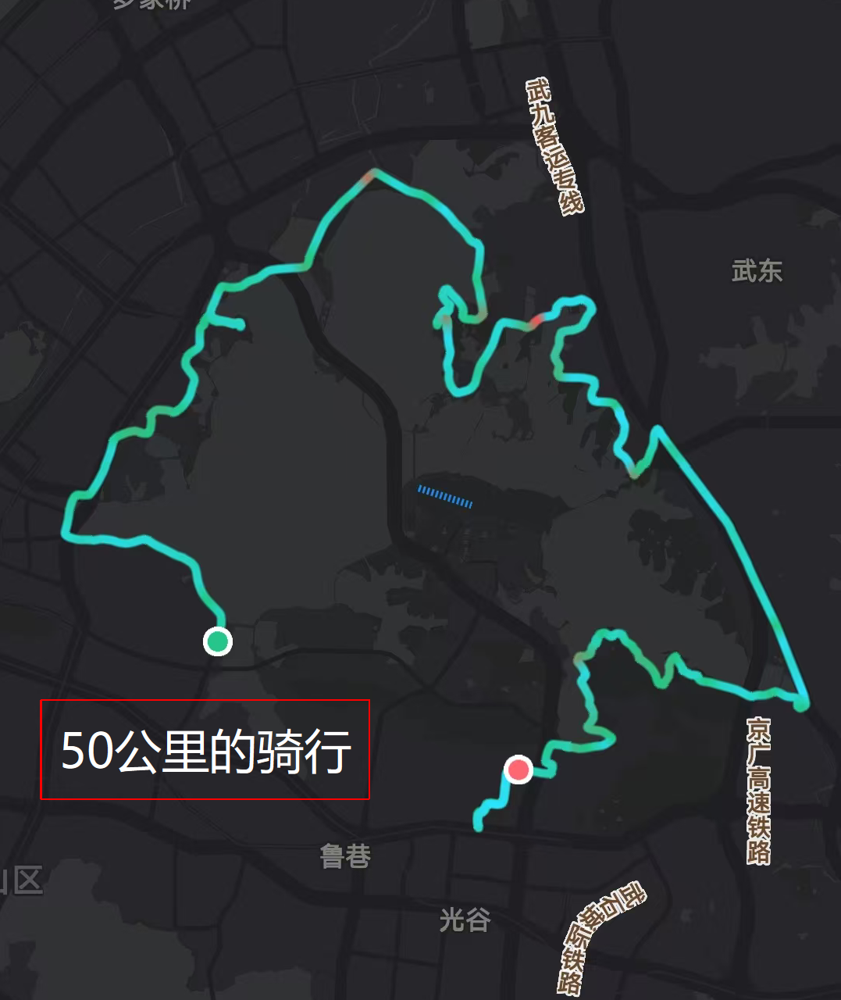
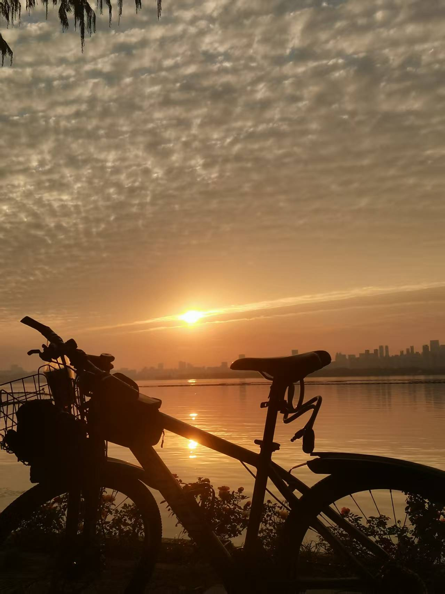
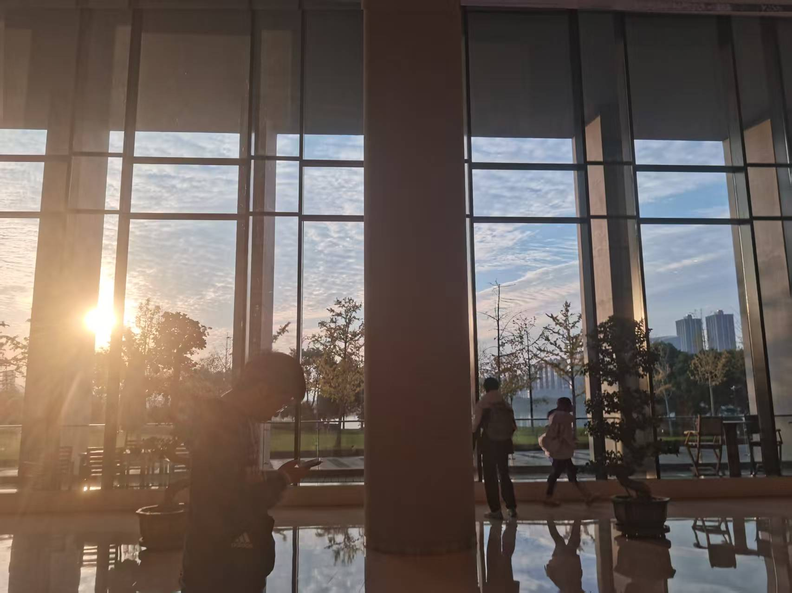

1

这是我来这里第一天看到的最可爱的东西啊啊哈哈，他的名字叫做小白，亲人而且有时会睡在你的电瓶上 🐱
居然在这里吃到了马来西亚鸡饭好好吃啊，现在还在流口水只是口水也从钱包的眼角流出来了啊哈哈哈哈 🤣
2

3

那天晚上懵懵懂懂的知道了晚上有血月，看到了凌晨3点，学长竟然还有早8！但是也在这次的观月中更加融入HUST 🌕
4

5

天气很好，去了粮道街，然后骑行去黄鹤楼，在骑行50公里绕东湖回华科嘿嘿 🚴♂️
6

7
那是我在这里看过最美的日落，我坐在码头，静靠在湖畔的围栏，静待它与湖面的倒影相遇，在另一个地方升起 🌅
这里的地标建筑 循礼门！！！ 🏙️
8
9

居然是腾讯！！！！ 🎉